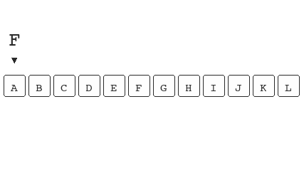
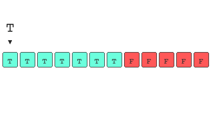
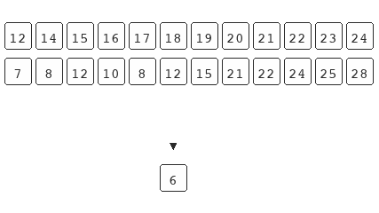

Mon 30 June 2025
Low Latency Computation
Anything that loads faster than 200ms is instantaneous for humans, anything slower and we would perceive the delay. Some systems are built to respond quicker than this, business cost can be sensitive to latency and every ms can make a difference.
How do we develop highly performant systems? I happened to share a train ride with Mark Shannon, who at the time was leading a team at Microsoft that had one goal: Make Python Fast.
I asked him, how does one make code more performant? To which he responded.
Make it do less.
Here's what doing less looks like:
Loop Invariant
A simple example of doing less in order to achieve better performance is with loop invariant conditions.
We loop over arrays while we code and make calls to other functions while looping. During a refactor or while we move code around we might not realise that some of the variables we are computing are constant.
def expensive(trades: list[Trade], n: int):
rolling_sum = 0
for trade in trades:
beta = compute_beta(n)
rolling_sum += beta * trade.risk
return rolling_sum / len(trades)
You'll notice in the example that I am looping over the list
trades and computing a beta value, but this beta value
is computed with the integer n which is consistent within
the scope of this function. If we move the computation of
beta to a point before we've entered loop we avoid having
to compute beta for each trade in trades.
def expensive(trades: list[Trade], n: int):
rolling_sum = 0
beta = compute_beta(n)
for trade in trades:
rolling_sum += beta * trade.risk
return rolling_sum / len(trades)
Now beta is computed at most once within this method
scope, we have essentially achieved doing less. If the
compute_beta method incurs an expensive overhead and we
are looking at a lengthy trades list this subtle oversight
would have a significant impact on our latency.
Python
There are several layers of abstraction in Python and there are ways we can code that allow us to utilise computation in C more effectively. One such example of this: using list comprehension over a vanilla for-loop.
If we wish to
understand the number of steps the machine is doing
for a method, Python allows us to disassemble bytecode using
import dis. You might notice that there are additional
LOAD_ATTR instructions in a vanilla for-loop so defaulting
to a list comprehension avoids this overhead and allows us
to do less.
Databases
Relying on external systems can be expensive, in some cases we might query the same system several times in order to complete an operation. If we have a distributed system or intend to scale our server horizontally we are increasing the number of things that open and close connections to the database. Each time we open/close a connection the CPU has to process these instructions, this overhead can be significant when we are working in low latency environments. To get around this we introduce a connection pool between the database and our server, the connection pool manages long lived connections on the database and frees up the database to focus on database things.
A common anti-pattern involving a database is having your
ORM make N+1 queries. For this to occur we have a 1-many
entity relationship. If we ask the database to return a
group of n countries and then for each country we ask for
all cities in that country we are making N (number of
countries in our initial query) + 1 (the initial query)
total requests to the database. These can be tricky to spot
since the individual query could be performant, but the
accumulative overhead and latency of all these queries can
cause problems.
We get around this by either asking for all countries and
then ask for all cities given a set of country ids and
perform the mapping in memory on the server, or we can
increase the complexity of the query using a JOIN and allow
the database to make the mapping. Either way we avoid the
back and forth overhead of making N+1 queries, effectively
doing less.
When we can't do less
Sometimes we can't do less, but we can decide when work is done. There are situations that allow us to pre compute results and provide performant computation at the cost of a slower start time.
Chess programming is an area which relies on high performance, the quick our program the further into the future we can look on each move during the game. One way we speed up a chess engine is by precomputing the movesets for every piece on the board for every possible position they might be in before the game starts. This allows us to look up all possible board positions for a piece during the game instead of computing only when we need it.1
In 3b1b's wordle solver he actually computes a pattern matrix for each word and saves it to a file in order to avoid having to incur the overhead on each execution of his wordle solver.
Constant Folding
Lastly there's an interesting optimisation that compilers make which is also utilised in python called Constant Folding.
When python is interpreted it parses the AST before
executing. During this AST construction it finds expressions
who's outcome is constant and computes the constant at this
point instead of computing the expression every time it is
referenced. As an example the variable x = 24
* 60 will be converted to 1440 before compiling the
bytecode instructs for the machine.
So in all cases, if we want a computer to be highly performant we just have to make it do less.
Further Reading
- perflint try running this on your python codebase to check for performance optimisations.
-
More on this will be explained when I write my second post on chess programming. ↩
Mon 23 June 2025
Leadership Patterns
Low performing teams have a lot in common. These teams often lack some of the basics. Low context, no direction and no understanding of purpose. We can summarise these basics into one thing: a lack of leadership.
Reflecting on failing teams, I've identified how I would nudge/how I've nudged a group of under performers into a team that delivers impact. Often there's a single missing ingredient and the team needs a catalyst for change. This can come from within the team and doesn't have to come from a leader.
Most failure patterns occur in companies that rely on organic organisation, as they've determined that autonomy is at odds with any intentional organisation design.
Things that are done with an intent in mind will always lead to a better outcome, otherwise you're just leaving it up to chance. We can have both, autonomy and organisation.
Failure case 1.
Everyone's a leader.
Communication is good, avoiding a decision is bad. In teams where everyone thinks/tries to be a leader the team behaves as if it were leaderless.
Individual contributors will state what they believe ought to be the best direction but it ends without consensus. These meetings are pointless as members stick to the idea that they've presented, and a team with 5 members will have 5 directions.1
This pattern is hard to notice since they usually come to light when you're in the middle of a stressful situation and everyone is sharing an opinion as a means to turn the ship around. It's also easy to be absorbed into giving your own bit of advice in order to feign contribution.
The members present a large amount of information and set no goal, or goals are highly individualistic. There's no point in calling yourself a team if there's no underlying vision/goal to achieve. You could now say this is hardly even a team and you would have saved time by not having a meeting at all.
The best way to address this situation is to take a step back and be honest. "I'm not going to remember half of this meeting." Then direct the attention to someone that is meant to be taking a leadership role and say: "Maybe x can summarize these thoughts into one or two points and we can focus on this, so we leave this meeting with the same aim". What ever is said next will certainly be remembered.
If you are the leader, then don't let your team leave more uncertain about how they should address the situation than when they arrived. A mature leader might even recognise that there's a team mate that's probably the most knowledgable and should use the opportunity to direct them to state the focus.
It's similar to a half time chat, you can't have 11 people in the team telling you what you should do better in the next half. That's not how a rally works.
Agreeing to commit to a direction and a goal is all part of being a team. Someone needs to stand up in moments when there's dysfunction.
Failure Case 2
No one is a leader.
Communication is good. Some teams are just sitting around waiting to be told what to do, if there's a sit around culture then nothing impactful gets done.
It's quite easy to tell if you're in a team that lacks leadership since no one will know what work should be done or how their own work fits into the bigger picture of the organisation.
Teams without a leader will lack context and purpose which are all traits that lead to lower motivation. Assuming that people will just know what to do, without forming some consensus is naive and might lead the team to doing pointless work.
Turning these kind of teams around requires a little more diagnosis of the no-leader symptom.
- Why is no one grabbing initiative?
- What are the risks involved in grabbing initiative?
- Is fear involved?
- Do we provide positive examples that initiative is rewarded?
You might come to realise that no one want's to take on the risk that comes from taking initiative, especially if there's only downside and no upside. Initiative should always be rewarded in organisations even if the wrong initiative was taken. Learning from mistakes is always better than sitting and doing nothing.2
Diagnosing why the team is behaving this way can lead you to notice that your org is not incentivising the correct behaviours.
There can be other reasons, like a lack of experience in taking ownership. There could also be a lack of hiring with intent leading to a skill misalignment. What ever it is, if there's a team that appears leaderless then there's a problem that needs fixing.
Leaders
In truth leaders are in a team not to be dictators, but to hear the concerns of everyone and distill it down to a direction and focus. Getting the whole team aiming at the same target can shift a low performing team to a high performing team over night.
Having a team aim all over the place will result in weak performance.
Motivating teams, is about context and purpose - you can leave them to do what they want as long as they have context and purpose. Without this they're directionless and will not meet expectations.
Some situations are a prime ground for someone to take ownership, just make sure you're awarding this behaviour.
Mon 09 June 2025
Reframe Binary Search
Binary search is quite a simple algorithm to explain and thus it is often one of the first algorithms computer scientists learn. It's also occasionally brought up in software engineering interviews as it can be applied when solving optimisation problems.
The traditional explanation of binary search is flawed and acts as a barrier to its application. Binary search is not an algorithm that believes a set can be divided into three groups, e.g. these numbers are too cold, these number are too hot and this number is just right.
This goldilocks framing of binary search forces us to look for situations where the problem contains an array of porridge ordered by temperature and we are in search of the one falls into our preferred consumption temperature.
Binary search is an algorithm that is optimal at finding state transitions and framing it as such opens up the application of binary search as we no longer approach problems like goldilocks and instead; finding the best porridge becomes finding the point at which the ordered bowls of porridge transition from being tepid to scolding.1
The Basics
Commonly, binary search is introduced with the example of finding a word in a dictionary. As an example say we are tasked to find the word "Hippo":
The brute force approach is to start at A, and flick through
the pages until you get to the page that contains "Hippo".
This approach works, however the time complexity of this
algorithm is O(n); where n is the number of pages in the
dictionary. So in the worst case, "Zebra" or
something, You're looking at all n pages.
Pretend H is Hippo:
n operations is not inherently bad. If you have a list
of 10 words. n operations isn't going to harm you. It
starts to get a bit much when you have a billion words
and it's not practical when you have n words to
find among a billion words.
Here's where we can apply binary search. If we want to find
the word "Hippo". We
start by jumping to a random page, or we open the book in
the middle.2 If the dictionary is
260 pages the middle will land us on 130 which will be M.
We know that H is before M so we can throw away half the
dictionary. M->Z, so from a single operation we've
already chopped the worst case scenario to n/2. We
don't stop here, now we go to page 65 (half of 130) which
lands us somewhere between F and G we know H is after
G so now we can pick something in between G -> M =
J. We continue doing this, narrowing down the pages, until
we land on the page that contains Hippo.

In the worst-case scenario, when we are looking in a
dictionary of 260 pages, we do 9 operations. If we relied
on the previous algorithm we would do 260 operations in
the worst-case.
The Weaknesses
This explanation does a good job to help us understand the algorithm but it overcomplicates binary search as it breaks down the operations that binary search is doing into three parts.
- Is the current word the word we are looking for?
- Is the word we are looking for ahead of the current word?
- Is the word we are looking for behind the current word?
These questions may help inform us as to how the algorithm behaves, but we can simplify it to the single binary question.
When does the word we are looking for no longer appear after our current word?
Instead of imaging the sequence as the words that might appear on each page, we can picture the sequence as the outcome of the statement: The word I'm looking for is after the current word.

As a result this frames binary search as a solution to finding a state transition. It is at the point when our word not longer appears after the current word that we find the word we are looking for.
Git Bisect
Binary search is used to find bugs. If you're familiar with
git then you might have heard of git bisect. For those
unfamiliar with git imagine a timeline with each point in
that timeline being a change to a file. So every time the
file is saved it adds a new node to the timeline.
Now instead of a single file, git works across a whole software project and each save is being noted down on the timeline. A change is what is being added and what is being removed, so the accumulated sum of all these changes is the current state of the project.
On large teams and complex projects bugs can occur after
several changes have been made to the code. If we
know that the code is broken in its current state but
aren't sure what change caused the bug we can use git
bisect to figure out which change is the culprit.
When we run git bisect we provide it with a point in time
that we are certain no bug existed. git bisect will
then present us a change between that time and now.
- No bug
- ?
- ?
- broken?
- ?
- ?
- Bug
We then have to answer; is the software at point 4
broken? If yes, the bug was introduced between 1 and 4.
This rules out all points after 4. Cutting the
points we have to analyse down in half. git bisect
continues, running a binary search over the changes in
the project until we find the change on the timeline that
introduced the bug.
Essentially we are using binary search to answer the statement: The bug exists, because we are interested when the state transitions from "The bug doesn't exist" to "The bug exists".
The Boolean Function
We can now separate binary search into two distinct parts. The algorithm part, which moves a pointer either up or down the timeline and the function that computes a boolean response. With this we can ask more interesting questions for which binary search provides an answer, as an example; "When did spend increase?" or "When did the user go into debt?".
We can even provide two arrays and find the answer for "When did trend A over take trend B", without computing the delta for all observations on the timeline.

The main underlining assumption taught with the traditional explanation is that the set you're operating on should already be sorted for the search to work. The example above shows that this isn't true. Binary search only requires the underlying data to be bisect-able.
Binary search is an effective tool for these state transition problems. It is interesting that the algorithm on its own is easy to understand, the complexity and it's application seems to grow when you separate the algorithms iterator and the statement.
I'd be interested in finding out if the application of other algorithms grows when they're decomposed in a similar way.
Further reading
Mon 02 June 2025
Understanding Time and Space
On May 24th 2000 the Clay Math Institute announced a $1,000,000 prize for solving one of 7 maths problems. Since then only 1 has been solved. The mathematician that solved the problem rejected the money.1
One of those problems is the P vs NP question which relates to how we estimate time and space complexity for algorithms in computer science and software engineering.
Complexity
Complexity is an estimate of the growth in either time
or space given an increase in the size of the input. Some
algorithms have a linear relationship between time and input,
we signify this complexity as O(n).
Constant complexity is signified as O(1) this means that
as we increase n (the size of the input) the time and
space is consistent, the algorithm doesn't take any longer
and doesn't require more RAM.
An example of an algorithm that take constant O(1) space is
finding the largest number in an unordered list of n
numbers. You'll notice below, as we move through the list
there's only one element we need to keep track of. This
element is the largest item we've seen up to that point.
When we see a larger number we replace the tracked number
with this new larger number.

No matter how many items we include in this list we would
still only need to track a single number, so the space
complexity of this algorithm is O(1). We might apply this
algorithm to find the largest file on a computer.
In terms of time complexity if we were to add more files or
more items to this list the amount of time it takes would
increase proportionally to the number of items we add. We
therefore say this algorithm has an O(n) time complexity.
If we wish to improve the time complexity of finding the
largest file, we can do this by having something track the
largest file in the systems and checks and updates this
whenever a file is written. This would provide us with a
constant time O(1) algorithm as we avoid having to check all
the file sizes every time we request the largest file. The
trade off here is added complexity when updating any file on
our system. If we were to reduce the size of the largest
file the second largest might now be the largest and we'd
have to find which file that might be.
We don't often require knowing what the largest
file on the system might be so this added complexity is
probably a waste of resource, additionally the overhead of
creating, updating and deleting files has now increased.
An O(n) search is probably enough for most machines.
Sorting
Sorting is often used to explain time complexity as there are a number of ways to sort items each with their own complexity. It's also useful because we can visualise sorting. Below I have provided an example of bubble sort, this has a time complexity of O(n2).

This isn't the most efficient way to sort a list of items, but it's a good representation of an O(n2) algorithm.
Categorising complexity
So far we've been discussing polynomial time algorithms, there exist algorithms which take exponential time to produce a solution. As an example in the case we have 2 items this would take 4 operations, if we increase to 3 items it would take us 8 operations. Such an algorithm is said to have O(2n) time complexity.
An example of an exponential algorithmic problem is the N-Queens ii problem. The time complexity for an algorithm to solve this problem is O(n!). So 3 items is 6 operations, 4 items is 24 operations. These are algorithms which a computer would struggle to solve, in a sensible time, as n gets larger.
Within the realm of these exponential algorithms exist
problems which we can solve in O(n!) time but we can
validate the solution in polynomial time. So even if n is
exceptionally large, given a solution, we are able to
validate the correctness relatively quickly.
P vs NP
This class of algorithms forms the basis for one of the millennium problems, known as P vs NP. The problem asks if there's a relationship between the complexity of validating the solution and complexity in solving the problem. If P = NP then problems that can be verified in polynomial time can also be solvable in polynomial time. However P ≠ NP implies that some problems are inherently harder to solve than they are to verify.
There are a few problems which have no existing polynomial solution, which upon finding one will determine that P = NP. Problems such as the traveling salesman problem (TSP), The boolean satisfiability problem and the vertex cover problem Proving that there exists a polynomial solution to these problems will net you $1 million.
In Practice
Solving these problems have practical applications. Solving TSP would provide us optimal solutions for delivery routing and vertex cover has an application in DNA sequencing. So how do we produce solutions in these areas when attempting to find the best solution can take a computer as long as the lifetime of the universe.
We tend to rely on algorithms that are fast on average, these algorithms may involve backtracking with a large amount of pruning; this approach is used in chess. There are also approximation algorithms or heuristic based approaches such as simulated annealing.
Trade Offs
Understanding time and space allows us to make trade offs between strategies. Certain algorithms can provide us an efficient approach to solving technical problems. There is a limit to how much we can do with algorithms and sometimes even problems that sound simple on the surface could have a $1 million bounty standing for 25 years, without you realising it.
-
I wonder if this will ever be adjusted for inflation otherwise the prize might not be that significant by the time the problem is solved. ↩
Mon 26 May 2025
Conventional Wisdom
There are two things that are impressive when looking at a software project. 1. The simplicity and 2 the consistency.
It can be overwhelming jumping into an organisation or project where the conventions are all over the place. Sometimes it's better if there's just one way to do things.
You're going to be battling with product and business problems, on top of that you're now having to deal with a team expecting XML and another team expecting JSON.
The more consistency and standardisation in a work place the easier it is to dive into a project and get familiar with the hard parts. Working across teams or on more than one code base can be a lot easier once the ways of working become familiar.
We can compare this to picking up a new board game, there's an initial overhead of learning the instructions and how the game plays out. Moving to a new team should feel like you're changing the board but the rest plays out the same way. Going between teams shouldn't feel like jumping between Dune Imperium and Risk1.
There are many decisions that need to be made in software and not having a generally agreed set of conventions adds more overhead to decisions. The downside is that there's a bit of a cold start issue as we get familiar to new guidelines2, but the payoff is worth it.
Having code that is consistent across the codebase improves comprehension for all of engineering
Software Engineering at Google (pg 173)
Having guidelines and rules help us lift the standard of engineering within an organisation and speeds up decision making on minor things like naming if we have defined our expectations.
How Stripe Builds APIs
When building APIs, internally or externally there are a few things it would be good to agree on upfront.
The Stripe API is generally considered to be good; after all, their API is their business. Many documentation tools even use "stripe-like" in their marketing. Stripe has rules and guidelines, which they follow when constructing APIs and they're usually backed up by solid reasoning.
Here are a few of their suggestions:
Avoid Jargon
The example they give is using an industry specific term for
an API property like card.pan instead of card.number.
Most people are familiar with a card "number" there are
fewer people familiar with a card "pan".
Accessible vocabulary can allow you to reach more users, you shouldn't gate keep your product and fence off your services to people that have insider knowledge.
Abbreviations are another example of this and should be called out e.g. GTM, you probably thought of Go To Market but I could have been talking about Google Tags Manager.
Your engineers might not come from the same industry and should ideally have diverse backgrounds. This can be played as a strength; if you notice someone asking for clarity on a phrase or word, perhaps you can find phrasing in your answer that is a more suitable term for the API.
Nested Structure
There will always be surprises with any integration.
I've witnessed a 200 status code returning
the message "Server Error".
Having properties such as account_number and
account_created_at is another one I've seen. Stripe avoids this
by opting for nested
structures, so in this case they would be returning:
account: {
created_at: <timestamp>,
number: 10
}
Properties as Enums
This one prepares us for the future since having a
property like canceled being either true or false can get
in the way when you introduce more state. We can
avoid filling up our objects with a myriad of redundant
booleans by sticking to an enum from the beginning.
Express Changes with Verbs
Stripe also tends to use clear verbs if a state change will
occur when you hit that endpoint for example:
/paymant/:id/capture.
Timestamps
Having all properties that are related to timestamps
suffixed with *_at. This allows you to distinguish the
type, which is harder had you gone with "created" as
this could be confused for a boolean.
Currencies
These should be represented in the lowest denomination, for example the pound is 100 pence, so we should be passing £10 as the integer 1000. This also helps against pesky floating point arithmetic. When providing a monitary amount when should also provide an indication as to which currency it is. E.g. "GBP" or "USD".
Metrics
When you're only worried about a single service it seems like defining metric conventions is a wasted effort. Metrics are often an after thought and usually always end up in a mess.
Defining a naming convention for your metrics, tags, and services is crucial to have a clean, readable, and maintainable telemetry data.
DataDog
DataDog has some good insight into how to start providing guidelines for metric names.
Avoid abbreviations
For the same reason mentioned above, these might have multiple meanings and in the metric world you don't want to confuse things like Status Code and Service Charge.
Namespaces
Namespaces are one honking great idea -- let's do more of those!
python -c 'import this'
They recommend having the metrics prefixed with the service or application that's generating those metrics.
Unified Tagging
Using standard tags like env, service and version can
help your new service get off the ground quicker with
dashboards that are already written to aggregate your metrics
around those tags.
Avoid Overly Specific Metrics
If you have a metric for the number of requests you can
start tagging your metrics with "method" which can be either
POST, GET et al. you shouldn't need to create a new metric
called post_requests to specifically capture post
requests.
Cardinality
The other thing to keep in mind when creating metrics, which
is useful for a guideline doc, is reminding ourselves that
each unique key-value pair represents a new time series,
so we should ensure we don't have tags with high cardinality.
Avoid using tags like user_id as you'll be storing
n time series, having a bounded set is better; for example
request methods have at most ~5 values.
Databases
Software engineers are often required to give names to tables and columns in databases. You can generally take a look at the other tables and columns to get an idea for existing naming conventions but I'd lean more cautiously here as all you need is a single column out of line and the conventions go to shit.
Naming Tables
Should they be plural or singular? Well according to stack overflow the second answer with 388 votes says "Plural table names" and the first answer with 388 votes says "Singular names for tables". So it beats me... Just pick one.3
Naming Columns
Some people want to have the table name in the primary key,
like user.user_id these people shouldn't write software.
Having all tables with the convention of id as the primary
key for that table I find makes most sense, having this in
common across all tables keeps things simple.
Timestamps
Like with an API the tables are also going to contain
timestamps and having a mix of column conventions to
identify these can be a pain. Typically I've gone with the
suffix of *_at. E.g. created_at, completed_at. I've
also seen created_date or date_completed. Similar with
foreign keys these should all be tablename_id where
tablename is the other table you're referencing.
Another convention that's typically followed with databases
is ensuring all tables have a created_at and updated_at
column from the start. Some people even push to having
deleted_at as one of those default columns.
Indexes
I've noticed an unspoken convention of naming indexes like
so: user_account_id_idx which would be an index on the
account_id column in the user table. You can also suffix
it with the type of index; _include, _gin, _brin.
Guidelines
Some of these can seem pretty straight forward if you've been writing code for a while, but you have to remember that not everyone would be exposed to these rules. There also exist engineers who believe they're better than any convention or guideline.
At the outset code reviews are the place to help form these conventions, they're certainly not for architectural design changes, the time for that has long past.
Setting out some initial guidelines can help you scale and
onboard. Having to select request.statusCode and
request.status_code because you're naming things different
across services will only get worse as the company gets
older (it doesn't even need to scale, we're battling with
time).
Some of these guidelines might follow just simple stylistic reasoning, but some of them allow you to get dashboards with very little effort or they help you avoid potential hurdles as the project grows.
Guidelines aren't here to hold developers back from self expression they're in place to help us work together and grow organisational learnings as well as provide a baseline for engineering standards.
How do you ensure your organisation is learning if you're not adding or molding your guidelines, does every new project start from zero?